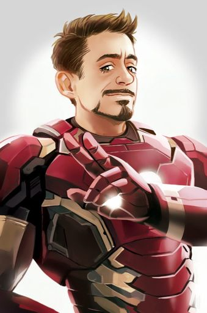

Go back
Tony Stark

Anthony Edward Stark, more commonly known as Tony Stark, is a fictional character portrayed by Robert Downey Jr. in the Marvel Cinematic Universe (MCU) film franchise—based on the Marvel Comics character of the same name—commonly known by his alter ego, Iron Man.
In the films, Stark is an industrialist, genius inventor, hero and former playboy who is CEO of Stark Industries.
At the beginning of the series, he is a chief weapons manufacturer for the U.S. military, until he has a change of heart and redirects his technical knowledge into the creation of mechanized suits of armor which he uses to defend against those that would threaten peace around the world.
Stark is one of the central figures of the MCU, having appeared in eleven films since his introduction in Iron Man (2008).
The character and Downey's performance have been credited with helping to cement the MCU as a multi-billion market cap.